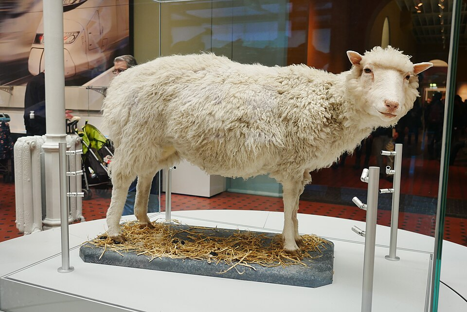

Nació de una copia: Dolly, la oveja clonada de una célula de otra oveja ya adulta
El instituto Roslin, cerca de Edimburgo, reveló que una oveja nacida en julio es la copia genética de un animal adulto, hecha a partir de una sola de sus células. Es el primer mamífero clonado de un ejemplar ya crecido, y la ciencia discute de golpe qué es un individuo.

El instituto Roslin, un centro de investigación agropecuaria a las afueras de Edimburgo, presentó hoy al mundo a la criatura más comentada de la ciencia reciente: una oveja de cara blanca, sana y de aspecto perfectamente común, llamada Dolly. Lo extraordinario no se ve: Dolly no tiene padre, y su madre, en rigor, es también su gemela idéntica nacida seis años antes. Fue creada a partir de una sola célula tomada de la glándula mamaria de una oveja adulta, cuyo núcleo se introdujo en un óvulo vaciado de su propio material y se implantó luego en el vientre de una tercera oveja. Nació en julio del año pasado; el mundo se entera hoy.
Hasta hoy, la biología tenía por casi imposible lo que este cordero demuestra. Se sabía clonar a partir de células embrionarias, todavía indecisas sobre en qué convertirse; pero se creía que una célula ya especializada —una de piel, una de glándula, una que durante años no hizo más que producir leche— había apagado para siempre las instrucciones que no usaba, como un libro del que se hubieran arrancado todos los capítulos salvo uno. Los científicos de Roslin lograron lo que parecía vedado: reprogramar esa célula adulta, devolverla a foja cero, convencerla de que volviera a ser capaz de fabricar un animal entero. El libro, resulta, conservaba todos sus capítulos, solo que cerrados.
Todo esto ocurre porque en cada una de esas células, hasta en la más humilde, está guardada la receta completa del organismo, escrita en esa doble hélice cuya forma este diario dio a conocer hace más de cuarenta años. Clonar es, en el fondo, tomar esa receta ya escrita y hacerla ejecutar de nuevo desde el principio. No fue sencillo ni limpio: hicieron falta doscientos setenta y siete intentos para que uno prosperara, y Dolly es la única sobreviviente de una larga serie de fracasos. Los investigadores buscaban, en verdad, un método para producir animales de granja mejorados y medicamentos en su leche; se toparon, de paso, con una de las preguntas más hondas que puede hacerse un ser vivo.
La ciencia, que suele bautizar sus hallazgos con siglas impronunciables, esta vez se permitió una sonrisa. La oveja se llama Dolly en honor a la cantante norteamericana Dolly Parton, célebre por su exuberante figura: como la célula original provenía de una glándula mamaria, a los bromistas del laboratorio no se les ocurrió mejor homenaje. Cuentan que el nombre lo propuso uno de los cuidadores del rebaño y que hizo tanta gracia que quedó. Detrás del chiste hay años de trabajo terco de un equipo dirigido por los doctores Ian Wilmut y Keith Campbell, que durante meses guardaron el secreto de la corderita mientras crecía en un prado escocés como una oveja cualquiera, ajena a la tormenta que iba a desatar.
Dolly es una oveja, y sin embargo esta noche no se habla de ovejas. Si se puede copiar un mamífero adulto, se preguntan ya los teólogos, los legisladores y la gente común, ¿qué impide copiar, algún día, a un ser humano? La sola idea desordena certezas que parecían firmes: qué es un individuo, qué tiene de único cada uno, si la persona es su receta o es algo más que su receta. Los propios autores del prodigio se apresuran a pedir que la clonación de personas se prohíba antes de que alguien la intente. La ciencia, una vez más, corre delante de la ley y de la conciencia, y le toca a la humanidad, no a la oveja, decidir hasta dónde quiere llegar.